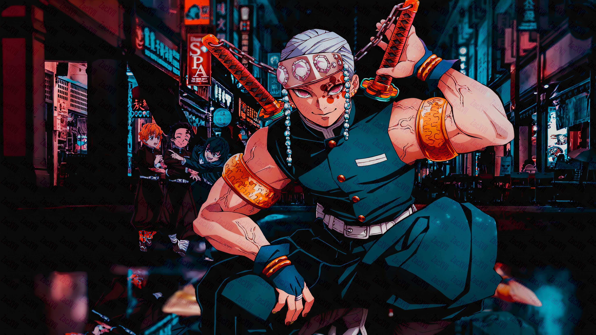

Tengen Uzui
Tengen Uzui is a character in the manga series Demon Slayer:Kimetsu no Yaiba. He is the main Hashira in the Entertainment District/Red Light District Arc.
Tengen is the Sound Pillar and only ninja of the group. He was born within a shinobi clan which believe in having multiple wives in order to produce offsprings.
Tengen Uzui Personality
Tengen has a very flamboyant and flashy personality. He is seen as arrogant and pushes the other lower demon slayers harshly. However, he showed his sympathetic side towards those closest to him, specially his three wives.
Strength

Tengen is a powerful and skilled combatant. He is considered the second physically strongest Hashira and fastest. He possess superhuman hearing and demonstrated his strength when he fought Upper Six Demon Gyutaro without a hand and left eye. This battle seems to be a fan favorite. After that battle, he left his duty as a Hashira to be with his wives. In the last Arc, he comes back to train the other demon slayers.
For more information, Bing it Fandom Wiki
Created by Natasha G